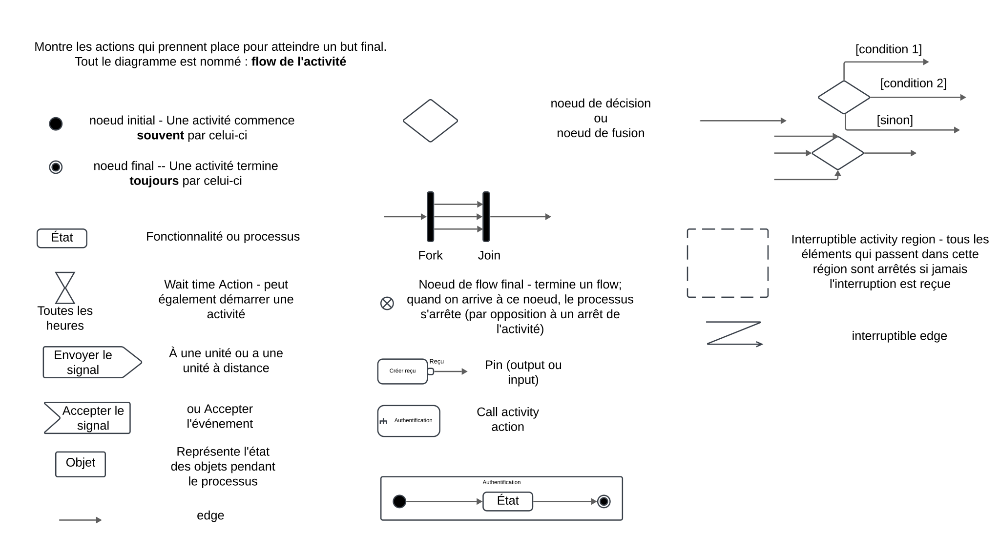
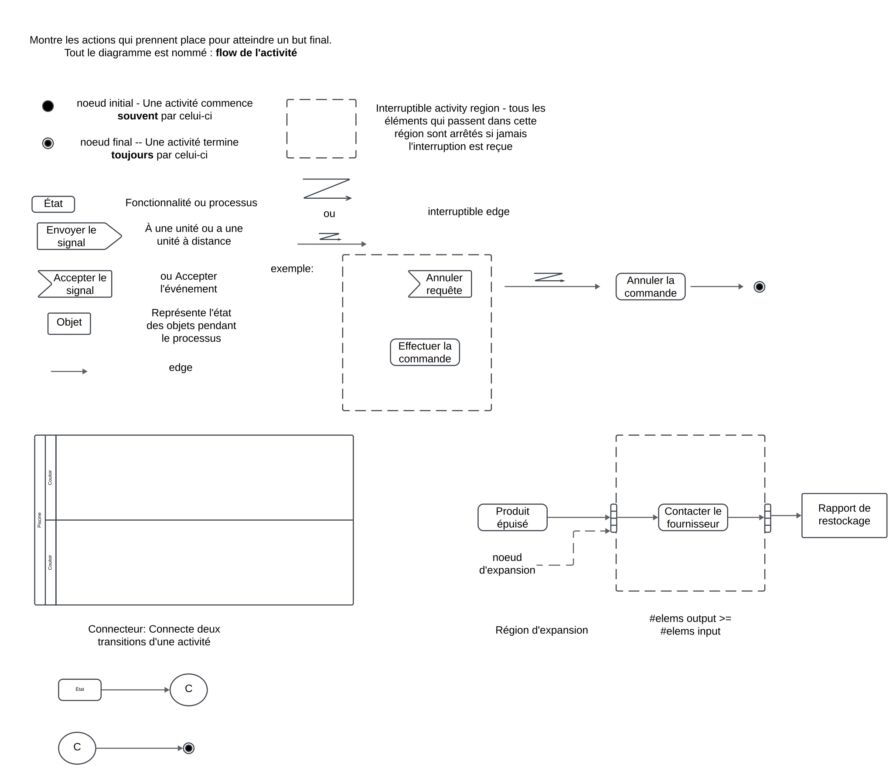
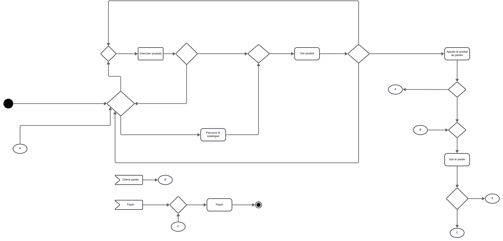

Diagrammes d'Activité
Objectif
Les diagrammes d'activité sont des représentations graphiques en UML qui illustrent les flux de contrôle et de données au sein d'un système. Ils mettent en évidence les étapes, les décisions et les interactions dynamiques entre composants, permettant de modéliser des processus, workflows ou comportements complexes.
Cas principaux d’utilisation
-
Modélisation des processus métier :
- Représenter visuellement les étapes d'un processus pour une meilleure compréhension et optimisation.
-
Analyse des workflows :
- Identifier les inefficacités, les redondances ou les goulets d'étranglement dans un flux de travail existant.
-
Conception de systèmes :
- Décrire le comportement dynamique d'un système, notamment les interactions entre composants.
-
Documentation des procédures :
- Fournir une référence claire pour les développeurs, les analystes et les parties prenantes.
Composants principaux
1. Nœuds d'action
- Définition :
Représentent des tâches ou des opérations exécutées dans le cadre de l'activité. - Notation UML :
Un rectangle aux coins arrondis contenant le nom de l'action.
2. Nœuds de contrôle
- Définition :
Coordonnent les flux entre les autres nœuds. - Types courants :
- Nœud initial : Indique le point de départ de l'activité.
- Nœud final d'activité : Termine tous les flux de l'activité.
- Nœud final de flux : Termine un flux spécifique sans arrêter l'ensemble de l'activité.
- Nœud de décision : Représente un point où une décision est prise, menant à des chemins alternatifs.
- Nœud de fusion : Combine plusieurs flux alternatifs en un seul.
- Nœud de fork : Divise un flux en plusieurs flux parallèles.
- Nœud de jonction : Combine plusieurs flux parallèles en un seul.
3. Nœuds d'objet
- Définition :
Indiquent que des instances d'un certain type peuvent être disponibles à un moment donné de l'activité. - Types courants :
- Objet : Représente des données ou des objets manipulés.
- Pin : Point d'entrée ou de sortie pour les données dans une action.
- Paramètre : Définit les entrées et sorties de l'activité.
- Buffer central : Gère les flux provenant de multiples sources et destinations.
- Magasin de données : Stocke des informations non transitoires.
4. Interruptions
-
Définition :
Les interruptions permettent de modéliser des événements qui interrompent le flux normal d'une activité. Ces interruptions peuvent être déclenchées par des erreurs, des exceptions ou des événements externes. -
Zones d'interruption :
Enclavent une ou plusieurs actions ou fragments, spécifiant les conditions sous lesquelles elles peuvent être interrompues. Ces zones sont indiquées par un contour en pointillés autour des éléments concernés. -
Flux d'interruption :
Représentent les chemins empruntés en cas d'interruption. Ils sont indiqués par une flèche en zigzag partant d'une zone d'interruption vers une action ou un nœud de contrôle.
5. Régions d'expansion
- Définition :
Enclavent un groupe de nœuds et d'arêtes qui sont exécutés plusieurs fois sur des données entrantes, une fois pour chaque élément de la collection d'entrée. - Utilisation :
Permettent de modéliser des opérations répétitives sur des collections de données.
6. Bords d'activité (Activity Edges)
- Définition :
Représentent les flux de contrôle ou de données entre les nœuds. - Types :
- Flux de contrôle : Indique le passage du contrôle d'un nœud à un autre.
- Flux d'objet : Montre le déplacement des objets ou des données entre les actions.
Présentation Visuelle
 
Structure et présentation d’un diagramme d'activité
-
Identification des actions et des décisions :
- Déterminer les étapes clés et les points de décision du processus à modéliser.
-
Définition des flux :
- Tracer les flux de contrôle et de données entre les nœuds, en indiquant clairement la séquence des opérations.
-
Utilisation des nœuds de contrôle :
- Intégrer des nœuds de décision, de fusion, de fork et de jonction pour représenter des comportements conditionnels ou parallèles.
-
Inclusion des interruptions :
- Ajouter des zones d'interruption et des flux d'interruption pour modéliser les événements pouvant interrompre le processus.
-
Ajout des nœuds d'objet et des régions d'expansion :
- Intégrer les données et les actions répétitives pour fournir un modèle complet et détaillé.
Résumé
Les diagrammes d'activité sont des outils puissants pour modéliser et analyser les processus dynamiques au sein d'un système. En incluant les interruptions, les flux de contrôle et les données, ils permettent de visualiser des comportements complexes et de fournir une base claire pour l'analyse, la conception et la communication.
Exemple Concret : Commande en Ligne
Diagramme final

Description du contexte :
Un client en ligne peut parcourir ou rechercher des articles, consulter un article spécifique, l'ajouter au panier, visualiser ou mettre à jour le panier, et finaliser la commande via un processus de checkout. Le client peut consulter son panier à tout moment.
Étapes principales :
- Le client commence par parcourir ou rechercher des articles.
- Une fois un article trouvé, il peut choisir de voir les détails de l'article.
- L'utilisateur peut ajouter l'article au panier ou revenir à la recherche.
- À tout moment, l'utilisateur peut visualiser le panier.
- Lors de la visualisation du panier, le client peut :
- Mettre à jour la quantité des articles.
- Supprimer un article.
- Après confirmation du panier, l'utilisateur procède au checkout :
- Fournir ses informations de livraison et de paiement.
- Confirmer la commande.
- Une fois la commande validée, le système affiche un message de confirmation.
Liste des Activités :
- Démarrer : L'utilisateur arrive sur le site ou ouvre l'application.
- Parcourir ou rechercher des articles :
- Option de recherche par mot-clé ou navigation par catégorie.
- Voir les détails d'un article :
- Informations sur le produit (description, prix, avis, etc.).
- Ajouter au panier :
- Le produit sélectionné est ajouté à la liste des articles du panier.
- Visualiser le panier :
- Liste actuelle des articles, avec les options :
- Mettre à jour la quantité.
- Supprimer un article.
- Liste actuelle des articles, avec les options :
- Procéder au checkout :
- Remplir les détails nécessaires (adresse, méthode de paiement).
- Valider la commande.
- Afficher la confirmation :
- Confirmation de la commande avec numéro de suivi ou détails de paiement.
Flux d'activités :
- Début :
- Activité initiale : L'utilisateur accède au site ou à l'application.
- Choix :
- Parcourir/rechercher des articles :
- Transition vers "Voir les détails d'un article".
- Ou directement consulter le panier.
- Parcourir/rechercher des articles :
- Voir les détails d'un article :
- Décision : Ajouter au panier ou continuer à chercher.
- Ajouter au panier :
- Retour à "Parcourir/rechercher" ou transition vers "Visualiser le panier".
- Visualiser le panier :
- Mettre à jour les quantités ou supprimer un article.
- Transition vers "Procéder au checkout" ou revenir au shopping.
- Procéder au checkout :
- Fournir les informations nécessaires.
- Valider la commande.
- Afficher la confirmation :
- Fin du processus.
Exemple de diagramme textuel (pour le représenter graphiquement) :
-
Activité initiale :
- Démarrer.
-
Activités principales :
- Parcourir ou rechercher des articles.
- Voir les détails d'un article.
- Ajouter au panier.
- Visualiser le panier.
- Mettre à jour ou supprimer un article.
- Procéder au checkout.
- Afficher la confirmation.
-
Transitions :
- Démarrer --> Parcourir ou rechercher des articles.
- Parcourir/rechercher des articles --> Voir les détails d'un article.
- Voir les détails d'un article --> Ajouter au panier.
- Ajouter au panier --> Parcourir/rechercher des articles.
- Ajouter au panier --> Visualiser le panier.
- Visualiser le panier --> Mettre à jour/supprimer un article.
- Visualiser le panier --> Procéder au checkout.
- Procéder au checkout --> Afficher la confirmation.
- Afficher la confirmation --> Fin.
-
Décisions :
- Voir les détails d'un article : Ajouter au panier ou continuer à chercher.
- Visualiser le panier : Mettre à jour, supprimer, ou procéder au checkout.
Notes supplémentaires :
- L'utilisateur peut revenir à n'importe quel moment à l'activité "Parcourir ou rechercher des articles".
- Le diagramme inclut des décisions conditionnelles (par exemple, après avoir vu les détails d’un article, ajouter au panier ou continuer à chercher).
Correction

Quiz
Exercice
Système de Gestion de Candidature
Contexte du système
Une entreprise souhaite mettre en place un système pour gérer le processus de recrutement. Ce processus inclut la soumission de candidature, la validation initiale par le service des ressources humaines (RH), les entretiens, et la décision finale.
Scénario choisi : Processus de recrutement
Description du processus
-
Soumission de la candidature :
- Le candidat soumet son dossier en ligne (CV, lettre de motivation, etc.).
- Le système envoie un accusé de réception automatique au candidat.
-
Validation initiale :
- Le service RH vérifie que le dossier est complet.
- Si le dossier est incomplet, le candidat est invité à fournir les informations manquantes.
-
Évaluation préliminaire :
- Si le dossier est complet, le recruteur évalue les compétences du candidat pour déterminer s'il convient pour un entretien.
- Si le candidat est jugé inadapté, un e-mail de refus lui est envoyé.
-
Entretien :
- Si le candidat est retenu, un entretien est programmé (en présentiel ou à distance).
- Après l’entretien, le recruteur évalue les performances du candidat.
-
Décision finale :
- Si le candidat est retenu, une offre d’embauche lui est envoyée.
- Si le candidat n’est pas retenu, un e-mail de refus lui est envoyé.
Instructions pour réaliser le diagramme
- Décompose chaque étape du processus en activités claires (ex. : soumettre candidature, valider dossier, évaluer candidat, etc.).
- Utilise des décisions pour les choix conditionnels (ex. : dossier complet ou incomplet, retenu ou non).
- Ajoute des actions automatiques si nécessaire (ex. : envoi d’un e-mail de confirmation ou de refus).
- Indique le début et la fin du processus à l’aide des nœuds de début et de fin.
- Si pertinent, montre les flux parallèles (ex. : entre évaluation et entretien) pour indiquer que certaines actions peuvent se dérouler en même temps.